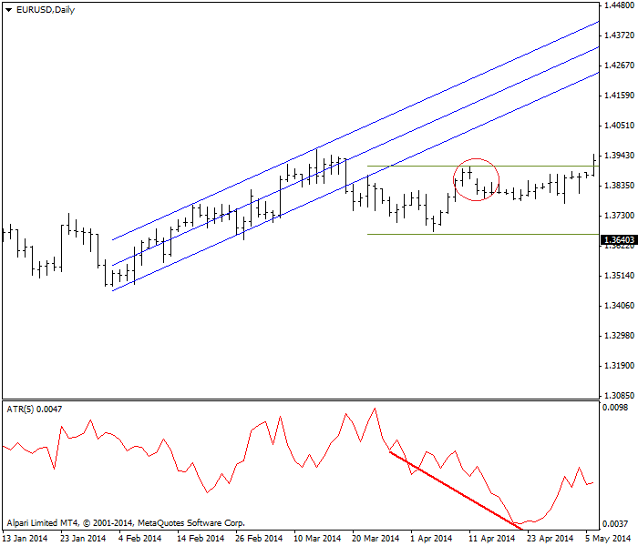

<!DOCTYPE html>
<html>
</html>
<head>
  <meta charset="utf-8">
  <meta http-equiv="X-UA-Compatible" content="IE=edge">
  <title>外汇站（fx-z.com） - 平均真实波动范围</title>
  <meta name="description" content="">
  <meta name="viewport" content="width=device-width, initial-scale=1">
  <meta name="robots" content="all,follow">
  <!-- Bootstrap CSS-->
  <link rel="stylesheet" href="vendor/bootstrap/css/bootstrap.min.css">
  <!-- Font Awesome CSS-->
  <link rel="stylesheet" href="vendor/font-awesome/css/font-awesome.min.css">
  <!-- Google fonts - Roboto-->
  <link rel="stylesheet" href="https://fonts.googleapis.com/css?family=Roboto:400,300,700,400italic">
  <!-- owl carousel-->
  <link rel="stylesheet" href="vendor/owl.carousel/assets/owl.carousel.css">
  <link rel="stylesheet" href="vendor/owl.carousel/assets/owl.theme.default.css">
  <!-- theme stylesheet-->
  <link rel="stylesheet" href="css/style.default.css" id="theme-stylesheet">
  <!-- Custom stylesheet - for your changes-->
  <link rel="stylesheet" href="css/custom.css">
  <!-- Favicon-->
  <link rel="shortcut icon" href="img/favicon.png">
  <!-- Tweaks for older IEs--><!--[if lt IE 9]>
    <script src="https://oss.maxcdn.com/html5shiv/3.7.3/html5shiv.min.js"></script>
    <script src="https://oss.maxcdn.com/respond/1.4.2/respond.min.js"></script><![endif]-->
</head>
<body>
  <div id="all">
    <div class="container-fluid">
      <div class="row row-offcanvas row-offcanvas-left"> 
        <!--   *** SIDEBAR ***-->
        <div id="sidebar" class="col-md-4 col-lg-3 sidebar-offcanvas">
          <div class="sidebar-content">
            <h1 class="sidebar-heading"> <a href="https://fx-z.com">fx-z.com</a></h1>
            <p class="sidebar-p">介绍外汇相关的基本知识，告诉您如何进行自己的技术面和基本面分析，讲解先进的交易理念，并且为您阐述失败交易者与专业交易者之间的真正区别。 </p>
            <p class="sidebar-p">通过这些课程的学习，您将学会如何根据自己的优势来应用情绪分析，还将了解真实世界的事件会对货币汇率产生什么影响，央行在外汇市场中所发挥的作用，以及交易者在颇受欢迎的即期外汇交易中有哪些选择方案。 </p>
            <ul class="sidebar-menu">
                <!-- Link-->
                <li class="sidebar-item"><a href="https://fx-z.com" class="sidebar-link">首页</a></li>
                <!-- Link-->
                <li class="sidebar-item"><a href="cihui.html" class="sidebar-link">外汇词汇</a></li>
                <!-- Link-->
                <li class="sidebar-item"><a href="ebook.html" class="sidebar-link">获取外汇电子书</a></li>
            </ul>
            <p class="social"><a href="https://www.cn-forextime.com/zh?partner_id=4920383" target="_blank"data-animate-hover="pulse" class="external facebook"><i class="fa fa-eur"></i></a><a href="https://www.cn-forextime.com/zh?partner_id=4920383" target="_blank" data-animate-hover="pulse" class="external gplus"><i class="fa fa-gbp"></i></a><a href="https://www.cn-forextime.com/zh?partner_id=4920383" target="_blank" data-animate-hover="pulse" class="external twitter"><i class="fa fa-rmb"></i></a><a href="https://www.cn-forextime.com/zh?partner_id=4920383" target="_blank" title="" class="external instagram"><i class="fa fa-dollar"></i></a><a href="https://www.cn-forextime.com/zh?partner_id=4920383" target="_blank" data-animate-hover="pulse" class="email"><i class="fa fa-money"></i></a></p>
            <div class="copyright text-center text-md-left">
             
              
            </div>
          </div>
        </div>
        <!--   *** SIDEBAR END ***  -->
        <!--   *** DETAIL ***-->
        <div class="col-md-8 col-lg-9 content-column white-background">
          <div class="small-navbar d-flex d-md-none">
            <button type="button" data-toggle="offcanvas" class="btn btn-outline-primary"> <i class="fa fa-align-left mr-2"></i>菜单</button>
            <h1 class="small-navbar-heading"> <a href="https://fx-z.com/8-11.html">下一篇 </a></h1>
          </div>
          <div class="row">
            <div class="col-xl-10">
              <div class="content-column-content">
                <h1>平均真实波动范围</h1>
     <p>
    平均真实波动范围（ATR）这一理念由 Wells Wilder 在其开创性著作《技术交易系统新思路》（1978 年）中提出。大多数情况下，ATR 并不作为指标使用，而是用于对止损位和目标位设置进行实际检查。
</p>
<p>
    范围是指任何时间周期内高低价之间的条形范围——每小时、H4、每日等等。为了说明缺口，Wiler 将其称为“真实”范围，而不是普通的旧“范围”。由于外汇市场几乎每天 24 小时开放，大多数情况下，我们会在周日——即周五纽约市场休市后，亚洲首个交易时段开放时遇到交易缺口，尽管我们有时会在其他情况下遇到缺口（例如央行发布公告，以及美国就业人数等重要数据发布时）。如果时间周期短于一天，我们也会遇到缺口。实际上，我们会在所有时间周期中遇到缺口，但这些缺口仅在时间周期较短时才引人注意。
</p>
<p>
    您可以在棒形图表课程章节阅读更多内容。
</p>
<p>
    如果您没有方法说明缺口，而且您的两个连续时段在点数方面拥有相同的高位-低价范围，您将会错过两个条形之间的缺口和相关的重要信息。缺口并非意外。从字面上理解，出现缺口是因为新消息到场，导致市场情绪出现变动。若您愿意在 1.3500 买入 EUR/USD，但仍在等待 1.3490，而新的利好欧元数据普遍出来之后，您将买入价改为 1.3525。缺口的存在提醒其他交易者，市场出现了重大事件。当然，并非每个缺口都会带来一股潮流，但缺口常常会引起一阵买入或卖出潮。不过请记住，这一潮流不会持续太久。
</p>
<p>
    进行 ATR 计算之前，请将 ATR 作为一项指标考虑。以下图表显示上行价格趋势摇摇欲之后的 5 日 ATR。ATR 开始下跌后，即使价格止跌且略有恢复，ATR 依然保持跌势。ATR 下跌是在示警：货币正进行横向交易盘整，如金色水平线所示。要点是：ATR 值下跌意味着市场游移不定且尚未形成趋势。当 EUR/USD 进入趋势，5 日 ATR 约为 80 点。向下突破后，它跌至约 44。请注意，最高价失败后，将出现一个下行缺口。通过绘制水平线，我们推导出，价格必须超过前一个最高价，并在我们能设想上行趋势恢复前“弥补缺口”。图表右侧附近，ATR 再次攀升，表示该货币出现了更多变动，但仅有 ATR 上升还不构成买入理由。
</p>
<p>
     ATR 指标以及线性回归和横向盘整范围。
</p>
<p>
    此处警告：ATR 线不遵循其他趋势线。在以上图表中，您将见到一条向上走的标准误差（线性回归）通道，而 ATR 线为横向波动。您也能见到一个可喜的上行趋势且附有持续下行的 ATR 斜线，或者反之亦然。请勿使用 ATR 线来定义价格趋势！不过，它能用于确认方向性意向的缺乏，尤其是如本例所示，与其他指标结合使用时。
</p>
<p>
    Wilder 的平均动向指标（ADX）在公式中用到了 ATR，以便纳入范围理念。单独显示 ATR 仅仅是一种更加直接的用于预测市场参与动向的程度。大数值 ATR 意味着有大量交易正在进行。下跌数值或低数值意味着参与度较低，而且低参与度通常出现在突破之前，虽然它并未指示突破方向
</p>
<p>
    <strong>ATR 的计算</strong>
</p>
<p>
    大多数或所有图表软件将 ATR 作为标准功能提供，因此您无需自己计算 ATR，但掌握它的理念非常重要。如果您截取货币在 5 个时段内的最高价-最低价范围，并且仅仅取其平均值，当缺口出现时，您获得的数值并不代表真正的范围。当昨日收盘价与今日开盘价之间出现缺口时，您衡量的是从昨日收盘价到今日最高价之间的差距，而不是像往常一样从昨日收盘价到今日最低价之间的差距。这会导致今日最高价-最低价范围的数值较大，而且即使取其平均值后，这依然会导致范围扩大，同时为您反映更准确的市场情绪——请记住，范围扩大意味着交易活动更多。
</p>
<p>
    <strong>ATR 的使用</strong>
</p>
<p>
    如上所述，大多数情况下，ATR 并不作为指标使用。ATR 用于衡量波动性，小数值表示活动较少，大数值表示活动较多。低波动先于突破出现，但在视觉上有一个更强有力的指标，可帮助我们进行衡量——收缩布林线（John Bollinger 将它称为“收敛”）。
</p>
<p>
    <br/>
</p>
<p>
    <br/>
</p>
              </div>
            </div>
          </div>
        </div>
      </div>
    </div>
  </div>
  <!-- JavaScript files-->
  <script src="vendor/jquery/jquery.min.js"></script>
  <script src="vendor/popper.js/umd/popper.min.js"> </script>
  <script src="vendor/bootstrap/js/bootstrap.min.js"></script>
  <script src="vendor/jquery.cookie/jquery.cookie.js"> </script>
  <script src="vendor/owl.carousel/owl.carousel.min.js"></script>
  <script src="vendor/masonry-layout/masonry.pkgd.min.js"></script>
  <script src="js/front.js"></script>
</body>